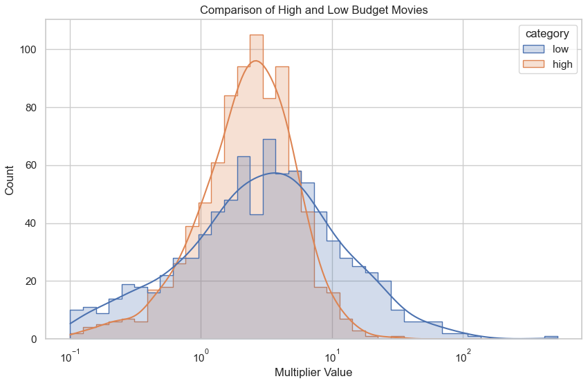

Budget Battles
Maximizing Returns in Filmmaking Odyssey
Movie Bet: John and Bob's Challenge
{% include plots/multipliers.html %}
[Scene: A bustling pub. John, a suave and affluent man in his 30s, and
Bob, an inventive, relaxed guy in his 50s, are deep in conversation over
beers.]
John: (raising his glass)
"Here's to our next ventures, Bob! I'm already envisioning my next
blockbuster."
Bob: (smiling)
"Cheers, John! But you know, I've been thinking... I want to go a
different route this time."
John: (curiously)
"How so?"
Bob:
"I'm convinced I can create a remarkable movie with a minimal budget. It's
not just about lavish sets and star-studded casts."
John: (laughs)
"Bob, in our world, bigger is better. More money means better technology,
A-list stars, and top-notch marketing. That's how you captivate audiences
globally."
Bob: (earnestly)
"That's one way to see it. But consider this: lower budget films are often
more story-driven. They're raw, authentic, and have a higher profit
margin. A small investment can lead to big returns if the story
resonates."
John:
"Sure, a few small films have made it big, but they're the exception. You
need scale, spectacle, and a sizable marketing budget to really make a
splash. It's about creating a cultural phenomenon."
Bob:
"But there's beauty in simplicity, John. A low-budget movie forces you to
be creative. It's not about how much you spend, but how you use what you
have. And when such a film succeeds, the return on investment is
phenomenal."
John: (pondering)
"Hmm... It's an interesting perspective. How about this? Let's make a
friendly bet. I say my high-budget extravaganza will outperform your indie
flick in both profits and popularity."
Bob: (determined)
"You're on, John. This is the perfect chance to prove that great
storytelling doesn't need a big wallet. Loser organizes and pays for the
winner's movie premiere party?"
John: (excited)
"That's a deal! To our movies and this challenge! May the best approach
win."
Bob:
"To creativity and success!"
They clink their glasses, sealing their bet.
The Data Driven Approach to John and Bob's Challenge
To answer which approach is better, we will look at the data from the
films in the TMBD database. The TMBD database contains information on over
45,000 movies, including budget, revenue, and popularity. We will use this
data to compare the performance of high-budget and low-budget films.
Defining Performance
To compare the performance of high-budget and low-budget films, we will
consider the multiplier between the budget and the boxoffice. A 10x
multiplier would imply that every dollar spent on the movie resulted in 10
dollars in box office revenue.
Let's look at the data
After cleaning and filtering the data, we are left with 2657 movies. 1308
high budget movies and 846 low budget movies. Given the definition of
performance above let take a look at the distribution of the multiplier
for both high and low budget movies.

Low-budget movies, in blue, typically yield more modest returns, but a
select few outperform expectations with high profitability. High-budget
films, in orange, show more consistent returns but fewer breakout
financial successes.
Movie Genre
Let's look at the distribution of genres for both high and low budget
movies.
{% include plots/pie_genre.html %}
The most popular genre are completely different for high and low budget.
High budget top 5 genre are: Action, Adventure, Comedy, Drama and
Thriller. Low budget top 5 genre are: Drama, Comedy, Thriller, Horror and
Romance. The biggest difference exists in Horrow where only 1.42% of high
budget movies are in this genre compared to 9.5% for low budget movies.
Let's try and understand why this is the case.
{% include plots/genre_influence_multiplier.html %}
We can explain the difference in the amount of horror films in low budget
compared to high budget by looking at the multiplier difference. On
average multiplier for horror films is 9.11 for low budget and 2.49 for
high budget. This means that low budget horror films return on investement
multiplier is at least 3x greater than any other genre of high budget
films. We can hypothesize that this financial incentive is what drives the
difference in the amount of horror films in low budget compared to high
budget.
Movie Runtime
The Movie Runtime is the duration of the movie in minutes. Let's explore
the distribution of runtime for both high and low budget movies and it's
relation to the multiplier.
{% include plots/multiplier_by_runtime.html %}
The scatter plot compares the financial multiplier against the runtime for
high (red) and low (blue) budget films. Most films cluster around the
90-120 minute mark, reflecting a standard movie length. High-budget films
show some outliers with high multipliers and longer runtimes, suggesting
blockbuster potential for epic-scale movies. Low-budget films also have
outliers with high multipliers, indicating potential sleeper hits. Both
high and low-budget categories show a wide scatter, implying that runtime
alone is not a strong predictor of financial success. Overall, while there
are high-performing movies at various lengths, the majority of films from
both budget categories tend to have moderate runtimes and multipliers.
This suggests that factors other than runtime may may be important in
determining a movie's financial performance.
Actor's age and sex
{% include plots/multiplier_actors_age.html %} {% include
plots/multiplier_actors_male_ratio.html %}
The first scatter plot explores the relationship between a film's
financial multiplier and average actor's age. Low budget movies tend to
have younger actors, probably because young and unexperienced actors are
less expensive. The age doesn't consistently yield higher or lower returns
for either budget category. In the second scatter plot, examining the
multiplier against the male ratio within the cast, a similar pattern
emerges: there's no discernible trend that a higher proportion of male
actors correlates with financial success. Both high and low-budget films
are dispersed throughout the plots, suggesting that the age and gender
composition of the cast have a minimal direct impact on a movie's return
on investment. This data implies that casting decisions regarding age and
gender are likely based on creative rather than financial considerations.
In our analysis, we will use other features related to the actor's age :
the ratio of young (below 18 years old) and old (above 60 years old)
actors in the movie, as well as the minimum and maximum age in each movie.
Actor's experience and popularity
{% include plots/multiplier_actors_experience.html %} {% include
plots/multiplier_actors_popularity.html %}
Those scatter plots compare the multiplier against the average actor's
experience and popularity. The actor's mean experience is calculated by
averaging over all actors in the movie, the number of films the actors
have appeared before. Low budget movies tend to have less experienced and
popular actors compared to high budget movies. For high budget movies, a
high actor's experience seems to have a positive impact on the multiplier.
For low budget movies, the multiplier shows more variability depending on
actor's experience. We will also include in our analysis the minimum and
maximum actor's experience and popularity, as well as the total number of
characters.
Spoken languages count
{% include plots/multiplier_languages.html %}
A higher number of spoken languages in a movie seems to induce lower
multipliers for both low and high budget movies.Our analysis will also
include other features : the original language and countries of
production, the title word count and the quarter when the movie was
released.
Initial Overall Perception
Low-budget films exhibit a greater variance in financial returns,
indicating a higher risk but also the potential for significant profit, as
seen in the broader spread of multipliers. In contrast, high-budget movies
show more predictable returns, suggesting a lower risk but also a lower
relative profitability. Genre preferences differ distinctly between the
two, with low-budget films favoring genres like Horror that offer high
returns at lower costs. Although movie runtime does not strongly correlate
with financial success, both high and low-budget films typically adhere to
standard feature-length times. This data implies that while high-budget
films offer stability, low-budget films provide the allure of high
rewards, driving diverse production strategies in the film industry.
However we only looked at the data from a high level. Let's dive deeper
into the data and see if we can find more insights. What are the most
important features that drive the multiplier?
Which features of a movie have a significant effect on its multiplier?
Let's now dive into the statistical analysis of the data, and more
especially into regressions. These simple but nevertheless powerful models
will help us to make our predictions for our two protagonists, and to better
understand which features are significant and essential to create the most
profitable movie possible according to their respective budget. After
applying min-max scaling to our features and a log transformation to the
multiplier output, we performed a linear regression to determine the
features with more significance. Here are the plots representing the
resulting coefficients of the regression for both low and high budget
movies.
{% include plots/predictors_high.html %}{% include plots/predictors_low.html
%}
By keeping only features that exhibit clear positive or negative
correlations with the output, that are in the 68% confidence interval and
adding their interactions terms, we obtain the following most significant
features.
{% include plots/significance_high.html %}{% include
plots/significance_low.html %}
The key features influencing the multiplier differ between low and high
budget movies. This indicates that each category follows distinct guidelines
for optimizing their multipliers. We can also see that high budget films
exhibit fewer significant features, simplifying the decision-making process
for a high budget producer in selecting the movie features. Some important
features are common in both categories : the movie runtime, genres and
production countries. However, an interesting fact is that the most
significant genres and production countries are not the same for high and
low budget movies. The multiplier of low budget movies is also dependent on
the title word count, the minimum actor's experience and average popularity,
and the minimum age. This also suggests a higher variance in the multiplier
for low budget movies. Knowing the significant features, we can now focus on
optimizing them to achieve the highest possible multiplier.
How to maximize the movies multipliers in high and low budget movies?
Now that we know the important features for our producers, the next question
is: How should they use them? This is where we can help. They already know
which features matter, but now they need to figure out what values to
choose. We'll guide them in picking the best values for these features. We
did an optimization and we will try to give them the best advice!
High budget movies optimal features
In high budget movies, the maximum multiplier we can obtain using the most
significant features is arount 20. The table below shows the advised
features to obtain it. This could help John make the best choices for his
movie.
{% include plots/optimal_table.html %}
The optimal runtime is around 190 min, and the producer should favors a
movie with multiple spoken languages (around 11). The genres he should try
are science fiction, crime or a combinaison of crime and fantasy, and he
should avoid westerns. In theory, the movie production countries should be
Japan, India and Canada, but this may not be applicable in this situation.
Low budget movies optimal features
By doing the same strategy than for high budget movies, the maximum value of
the multiplier is above 4000, which is not realistic.
{% include plots/correlation_low.html %}
We can still recommend to Bob to produce an animation movie appears to be a
favorable choice, as the animation genre is among the top positively
correlated features. The genre that he has to avoid are drama,
science-fiction, fantasy, or action given the significant negative
correlation with the multiplier. But we are not sure about the others
aspects of the movie. Helping low-budget movie producers remains challenging
because low-budget movies vary significantly. Finding a clear trend in
selecting features becomes hard, and the choice may seem somewhat random.
High vs. Low Budget Movies: Which Strategy Pays Off?
Finally, we performed a Mann-Whitney test to determine which category has
the highest multiplier. We discovered that the distribution of multipliers
for low-budget movies is greater than the distribution of multiplier for
high-budget movies. However, if we try to predict which movie features to
take in order to maximize the multiplier in low budget movies, it doesn't
work. Making a low budget movie is riskier : you may have a very big return
on investment, but the recipe to do so is unknown. One advise we could give
to Bob is to try horror movies, as from our data visualisation it seems to
be the genre producing the higher multiplier for low budget movies. Another
option is an animation movie as there is a positive correlation with the
multiplier. Making a high budget movie is safer, as we could determine which
parameters to take to have the maximum multiplier. The important parameters
are the runtime, the spoken languages count, the genre and the production
country. John should go for a science fiction or crime movie (can be
combinated with fantasy), 190 min long with 11 languages spoken. It is
therefore hard to tell who between John and Bob is going to make the higher
profit and win the bet, but Bob is definitely a bolder player!